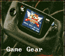

Sega Game Gear

In 1990, Sega came out with their own hand-held gaming system. The Game
Gear featured color something the Gameboy was sorely lacking. The Game
Gear was larger than the Gameboy overall, but it also gave you the ability
to play some Master System games. The Game Gear did have a languauge
lockout of a sort. A hardware switch was needed to change between english
and japanese language games. You could play most of the games regardless
of having the switch without any problems though.
Back to Main Menu
Anime Video Game Resource Center © 1998 by Luis A. Cruz